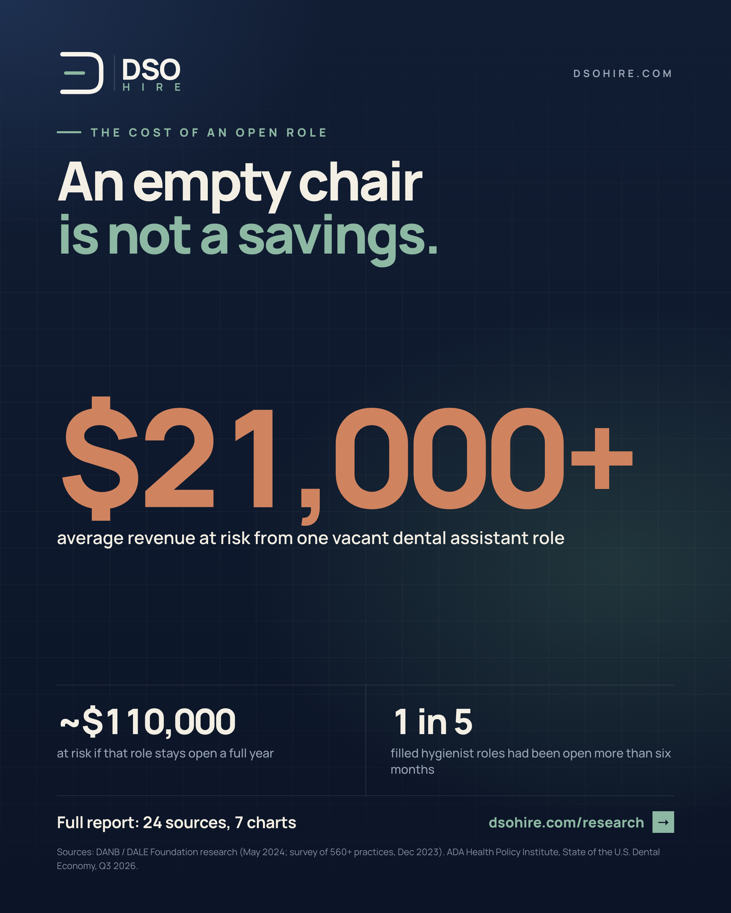
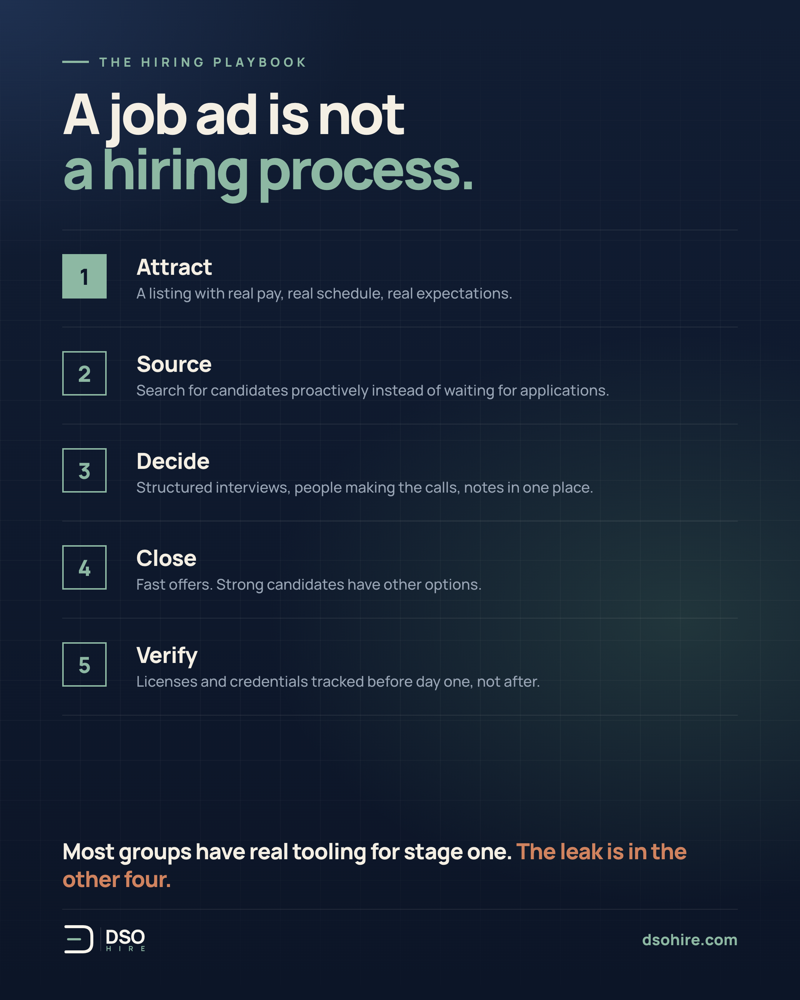
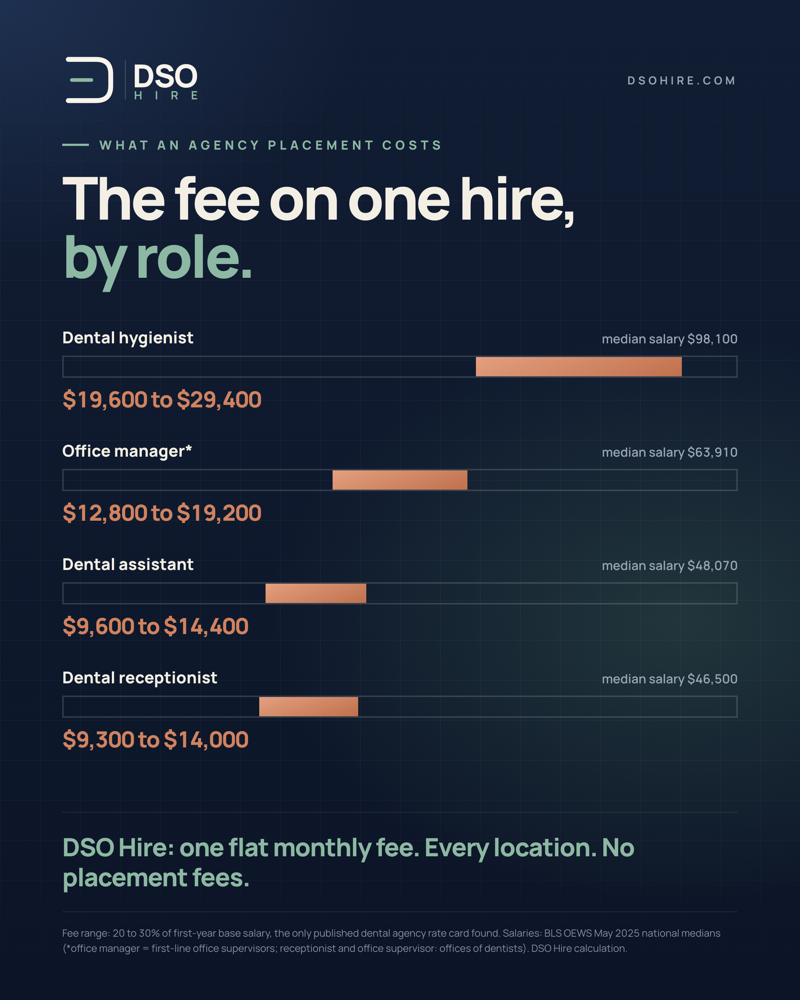
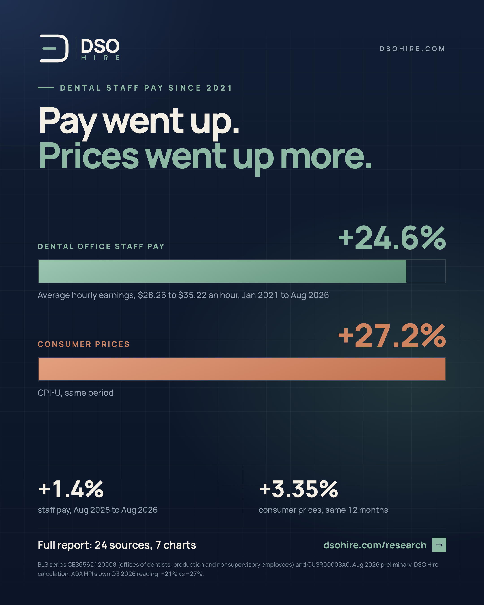
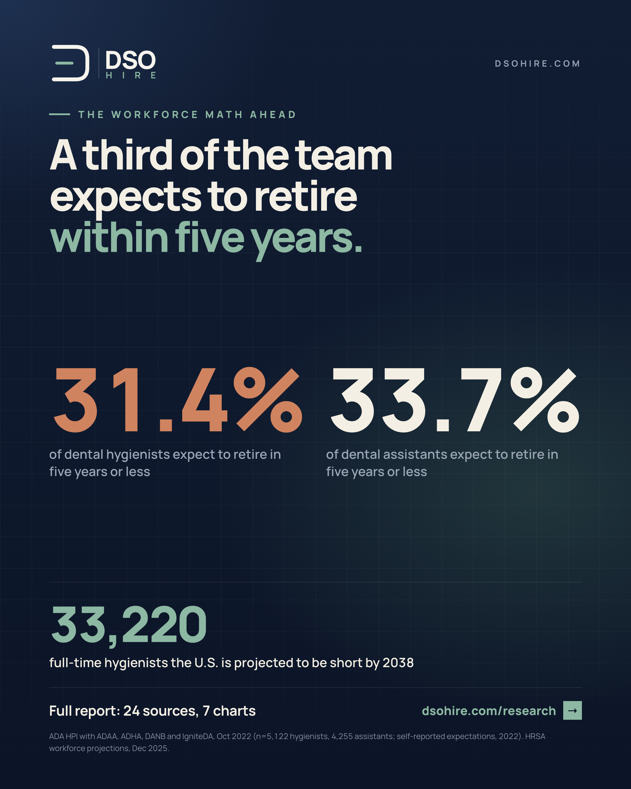

| # | When | Post | Image |
|---|---|---|---|
| 1 | Fri Nov 6, 9:30 AM | What I got wrong about dental hiring | none |
| 2 | Tue Nov 10, 9:00 AM | The cost of an open role | yes |
| 3 | Thu Nov 12, 9:00 AM | A job ad is not a hiring process | yes |
| 4 | Fri Nov 13, 9:30 AM | Becoming a hygienist in Texas (candidate) | none |
| 5 | Tue Nov 17, 9:00 AM | Put the pay on the listing | none |
| 6 | Thu Nov 19, 9:00 AM | The agency fee on one hire, by role | yes |
| 7 | Fri Nov 20, 9:30 AM | What actually made you leave? (candidate) | none |
| 8 | Tue Nov 24, 9:00 AM | Thanksgiving: say it to your team | none |
| 9 | Tue Dec 1, 9:00 AM | Pay went up. Prices went up more. | yes |
| 10 | Thu Dec 3, 9:00 AM | The 48-hour rule | none |
| 11 | Fri Dec 4, 9:30 AM | Know your number (candidate) | none |
| 12 | Tue Dec 8, 9:00 AM | The retirement wave | yes |
| 13 | Thu Dec 10, 9:00 AM | Your job description is a sales page | none |
| 14 | Fri Dec 11, 9:30 AM | New dentists: what to ask a group before you sign (candidate) | none |
| 15 | Tue Dec 15, 9:00 AM | Groups feel the staffing squeeze most | none |
| 16 | Thu Dec 17, 9:00 AM | Plan Q1 hiring before January | none |
| 17 | Fri Dec 18, 9:30 AM | Three things to do before 2027 (candidate) | none |
| 18 | Tue Dec 22, 9:00 AM | To the teams working this week | none |
| 19 | Tue Dec 29, 9:00 AM | Building DSO Hire in 2026 | none |
Things I believed about dental hiring before building DSO Hire, ranked by how wrong I was:
3. "It's mostly a pay problem." Pay matters, but candidates walk away from disorganized processes as often as low offers. Slow replies read as disrespect.
2. "Groups want more applicants." They want fewer, better-fit applicants. Volume without fit is just more screening work for an office manager who already has a full-time job.
1. "Candidates will trade privacy for exposure." Absolutely not. Once we made profiles private by default and put candidates in control of who sees them, everything about the product got easier to explain. People don't want to be findable. They want to be in control.
Ten years around this industry and it can still humble you.
What's something dentistry taught you the hard way?

An empty chair is not a savings.
It's tempting to look at an open position and see payroll you aren't spending. The numbers say otherwise.
Research from DANB and the DALE Foundation (560+ survey responses) found one vacant dental assistant role puts over $21,000 in revenue at risk on average. If it stays open a full year, that's close to $110,000.
And roles do stay open. In the ADA Health Policy Institute's Q3 2026 survey, one in five filled hygienist positions had been open more than six months.
Meanwhile the rest of the team absorbs the load, overtime climbs, and recall patients drift to the office down the street.
Speed to hire isn't an HR metric. It's a P&L line.
How long did your last hygiene hire take, start to finish?

A job ad is not a hiring process.
The groups that hire well run the same five stages every time:
1. Attract. A listing with real pay, a real schedule, real expectations.
2. Source. Search for candidates instead of waiting for them.
3. Decide. Structured interviews, people making the calls, notes in one place.
4. Close. Fast offers. Strong candidates have other options.
5. Verify. Licenses and credentials checked before day one, not after.
Most groups only have real tooling for stage one. The other four live in spreadsheets, texts and someone's memory. That's where good candidates leak out.
We built DSO Hire to run all five in one place. But even if you never use it, name an owner for each stage. The process you write down is the process you can fix.
Which stage leaks the most in your group?
Thinking about becoming a dental hygienist in Texas? Here's the short version.
1. Graduate from an accredited dental hygiene program, usually an associate degree.
2. Pass the national written board exam and a clinical exam.
3. Complete the Texas jurisprudence assessment.
4. Apply to the Texas State Board of Dental Examiners, with a fingerprint background check, CPR and a short required course.
The pay is strong. The median Texas hygienist earned $99,240 in the latest federal data (BLS, May 2025), and Texas projects hygienist jobs to grow 21.8% from 2024 to 2034.
We wrote a full step-by-step guide with the requirements, exam fees, the route for hygienists moving from another state, and renewal rules. It's free on dsohire.com under Guides.
Know someone in hygiene school or thinking about a career change? Send this their way.
Want to fill dental roles faster? Put the pay range on the listing.
I know the objections. Current staff will see it. Competitors will see it. We'll lose negotiating room.
Here's what actually happens. Listings without pay get skipped by the best candidates, who have options and no patience for mystery. The applicants you do get spend a phone screen discovering you're $6 an hour apart, and everyone's time is wasted.
Transparent pay is a filter that works in your favor. It screens in people your range genuinely works for, and it signals that you run a straight operation. In a market this tight, that signal is worth more than negotiating room you probably weren't going to use.
DSO Hire pushes every listing to include pay, and it's one of the product decisions I'd defend hardest.
Operators, what's your honest reason for leaving pay off?

What an agency charges for one hire, by role.
The only dental staffing agency rate card we could find published charges 20 to 30% of first-year salary for a direct hire. Apply that to federal median pay (BLS, May 2025):
Dental hygienist: $19,600 to $29,400
Office manager: $12,800 to $19,200
Dental assistant: $9,600 to $14,400
Front desk: $9,300 to $14,000
Per hire. Per location. Every time someone leaves.
Agencies earn their fee on hard searches, and there's a place for them. But for the routine roles a group hires all year, paying a fifth of a salary each time adds up fast.
That's why DSO Hire is one flat monthly fee across every location, with no placement fees.
What did your group spend on placement fees this year?
Question for everyone who's worked chairside:
What actually made you leave a dental job? Not the polite exit-interview answer. The real one.
In surveys of dental assistants, pay comes up, but so does feeling underappreciated. In DANB's 2024 survey, 40% of assistants who left cited it.
I'm asking because we're building career tools for dental professionals at DSO Hire, and honest answers to this question are worth more than any survey we could run.
Comments are open. Vague answers welcome if specifics feel too close to home.
A number that stuck with me this year: 43%.
That's the share of dental assistants who said they feel valued by their employer in DANB's 2026 survey. In 2020 it was 72%. (It's a small survey, but the drop is hard to ignore.)
Recognition costs nothing, and it's one of the few retention tools every office already has.
So this week, before the holiday, tell your team specifically what they did well this year. Not "thanks for everything." The patient they calmed down. The schedule they rescued. The new hire they trained.
It won't fix pay or staffing. It will remind people why they stay.
Happy Thanksgiving to every dental team out there.

Dental staff got raises. Prices got bigger ones.
Average hourly pay for dental office staff rose 24.6% from January 2021 to August 2026, from $28.26 to $35.22 (BLS, offices of dentists). Over the same stretch, consumer prices rose 27.2%.
The past year is wider still: pay up 1.4%, prices up about 3.4%.
The ADA Health Policy Institute's own reading lands in the same place: staff pay up 21% against 27% inflation.
So when a hygienist or assistant tells you they can make more elsewhere, they're not just negotiating. In real terms, many of them are earning less than they did in 2021.
If your group hasn't looked at pay against the local market this year, January is a good time.
The simplest hiring rule I know: reply to every applicant within two business days.
Not hire them. Not interview them. Just reply.
A strong hygienist or assistant is usually talking to more than one office. The first one to respond with a clear next step is the one that feels organized, and the one that feels organized usually wins.
Two days of silence reads as "they're not that interested" or "this place is chaotic." Either way, you lose them before the interview.
It doesn't take software. It takes an owner. Someone at each location whose job is to clear the inbox every day, with a short reply ready for yes, no and maybe.
What's your group's average time to first reply?
Before you talk to any employer, know your number.
The latest federal pay data (BLS, May 2025):
Dental hygienists: $98,100 median a year, about $47 an hour
Dental assistants: $48,070 median, about $23 an hour
Your number depends on your state and city, and the gap between markets is real. That's why we built free salary pages for dental roles by state and metro, using the same federal data. You'll find them on dsohire.com under Salaries.
Walk into the conversation knowing the median, the top of the range, and what you'd need to move. It changes the whole negotiation.

The staffing shortage has a second wave coming.
In a 2022 survey of more than 9,000 dental hygienists and assistants (ADA Health Policy Institute with ADHA, ADAA, DANB and IgniteDA), 31.4% of hygienists and 33.7% of assistants said they expect to retire within five years.
That's self-reported, and not everyone will follow through. But even a fraction of it lands right now.
The federal workforce projection (HRSA) puts the U.S. short 33,220 full-time hygienists by 2038, a bigger gap than for general dentists.
The groups that come through this well won't be the ones that post the most ads. They'll be the ones that keep a warm pipeline before they need it.
How many of your team are within five years of retirement?
Your job description is a sales page, not a legal document.
Most dental listings read like a list of demands: "must have 3+ years, must be a team player, must be flexible." Then they wonder why nobody applies.
The candidates you want are comparing you to two other offices. Give them a reason to pick you:
The real schedule. Which days, what hours, how often Saturdays come up.
The pay range, up front.
What the day actually looks like. Patients per day, the equipment, who they'll work with.
Why people stay. Be specific.
Keep requirements to the ones that are truly required. Every extra "must" quietly filters out someone good.
What's one thing you wish more dental listings said?
More new dentists are starting their careers with a group. In the ADEA's survey of the class of 2025, 32% of seniors heading into private practice planned to join a DSO.
If that's you, here's what to ask before you sign:
How exactly is pay calculated? A guarantee, a percentage of production, or both? If it's a percentage, of what: production or collections? Are lab fees deducted?
When does the guarantee end, and what happens to your pay after it does?
How is the schedule built? Who decides how many patients you see?
What support do you get? Mentorship, CE, specialists on site?
Two offers with the same headline number can be tens of thousands apart once you understand the structure. Get it in writing, and don't be shy about asking.
Dentists further along: what do you wish you'd asked?
Every dental practice feels the staffing squeeze. Groups feel it most.
When the ADA Health Policy Institute asked dentists to name their top challenges for 2026, 54.2% put staffing in their top three, second only to insurance.
Among dentists at dental support organizations, staffing ranked first, at 59.3%. (The DSO subgroup is small, so read it as directional.)
It makes sense. A group isn't hiring for one office. It's hiring for ten or fifty at once, with different markets, different managers and one shared reputation.
That's a different problem than a single practice has, and it needs different tools. Shared pipelines, consistent processes across locations, and one view of every open role.
If you run hiring for a group, what's the hardest part of doing it across locations?
Plan your Q1 hiring before January, not during it.
Five things to do in the next two weeks:
1. List every role you expect to fill by March, including the ones you're quietly worried about.
2. Check your pay against the local market. It's been a year of prices outpacing raises.
3. Refresh your job descriptions so they're ready to post on January 2.
4. Name one person at each location who owns replying to applicants.
5. Reach back out to last year's strong runners-up. Some of them are ready to move now.
The groups that start January with a plan spend February interviewing. Everyone else spends it writing listings.
Thinking about a new dental job in 2027? The holidays are a good time to quietly get ready.
Three things to do before January:
1. Update your resume while this year is fresh. Write down the numbers: patients per day, procedures, anything you trained others on.
2. Know your number. Look up the pay range for your role in your city.
3. Set up a private job alert so the right openings come to you, without anyone at your current office knowing you're looking.
You can do all three free on dsohire.com. Profiles are private by default.
No pressure to move. Just be ready when the right thing shows up.
To the dental teams working this week: the emergency appointments, the patients squeezing in before their insurance resets, the front desk handling all of it with a smile.
Thank you. You keep a lot of people smiling through the holidays.
Merry Christmas and happy holidays from all of us at DSO Hire.
This year I launched DSO Hire, a hiring platform built only for dental groups and the people who work in them.
A few things we shipped since summer:
A full hiring platform for multi-location groups: job posting, pipelines, messaging and fit scoring, one flat fee across every location.
Private-by-default profiles for dental professionals, so people can look without their office knowing.
A research report on the dental hiring shortage, built only from primary sources.
Free salary data for dental roles by state and metro, and our first career guides.
The biggest thing I learned: the hiring problem in dentistry isn't a lack of job ads. It's a lack of process, and the people it hurts most are the teams already stretched thin.
In 2027 we're opening DSO Hire to a small group of charter dental groups and building what they need next.
Thank you to everyone who followed along, commented, shared, and told me honestly what you thought. Happy New Year.